library(raster)Loading required package: sp
All raster operations in this topic are accomplished using the raster library.
library(raster)Loading required package: spRaster are representations of continuous, or semi-continuous, data. TYou can envision a raster just like an image. When me make a leaflet() map and how the tiles, each pixel is colored a particular value representing elevation, temperature, precipitation, habitat type, or whatever. This is exactly the same for rasters. The key point here is that each pixel represents some defined region on the earth and as such the raster itself is georeferenced. It has a coordinate reference system (CRS), boundaries, etc.
A raster is simply a matrix with rows and columns and each element has a value associated with it. You can create a raster de novo by making a matrix of data and filling it with values, then turning it into a raster.
Here I make a raster with random numbrers selected from the Poisson Distribution (fishy, I know) using the rpois() function. I then turn it into a matrix with 7 rows (and 7 columns).
vals <- rpois(49, lambda=12)
x <- matrix( vals, nrow=7)
x [,1] [,2] [,3] [,4] [,5] [,6] [,7]
[1,] 15 18 13 13 11 10 8
[2,] 10 8 9 10 10 9 15
[3,] 15 10 8 12 12 13 11
[4,] 18 10 11 7 15 18 5
[5,] 14 10 13 5 5 7 15
[6,] 11 9 9 13 14 9 13
[7,] 12 15 11 11 12 10 8While we haven’t used matrices much thus far, it is a lot like a data.frame with respect to getting and setting values using numerical indices. For example, the value of the 3rd row and 5th column is:
x[3,5][1] 12To convert this set of data, as a matrix, into a geospatially referenced raster() object we do the following:
r <- raster( x )
rclass : RasterLayer
dimensions : 7, 7, 49 (nrow, ncol, ncell)
resolution : 0.1428571, 0.1428571 (x, y)
extent : 0, 1, 0, 1 (xmin, xmax, ymin, ymax)
crs : NA
source : memory
names : layer
values : 5, 18 (min, max)Notice that when I plot it out, it does not show the data, but a summary of the data along with some key data about the contents, including:
- A class definition
- The dimensions of the underlying data matrix,
- The resolution (e.g., the spatial extent of the sides of each pixel). Since we have no CRS here, it is equal to \(nrows(x)^{-1}\) and \(ncols(x)^{-1}\).
- The extent (the bounding box) and again since we do not have a CRS defined it just goes from \(0\) to \(1\). - The crs (missing) - The source can be either memory if the raster is not that big or out of memory if it is just referencing.
If these data represent something on the planet, we can assign the dimensions and CRS values to it and use it in our normal day-to-day operations.
We can also grab a raster object from the filesystem or from some online repository by passing the link to the raster() function. Here is the elevation, in meters, of the region in which Mexico is found. To load it in, pass the url.
url <- "https://github.com/DyerlabTeaching/Raster-Data/raw/main/data/alt_22.tif"
r <- raster( url )
rclass : RasterLayer
dimensions : 3600, 3600, 12960000 (nrow, ncol, ncell)
resolution : 0.008333333, 0.008333333 (x, y)
extent : -120, -90, 0, 30 (xmin, xmax, ymin, ymax)
crs : +proj=longlat +datum=WGS84 +no_defs
source : alt_22.tif
names : alt_22
values : -202, 5469 (min, max)Notice that this raster has a defined CRS and as such it is projected and the extent relates to the units of the datum (e.g., from -120 to -90 degrees longitude and 0 to 30 degrees latitude).
If we plot it, we can see the whole raster.
plot(r)
Now, this raster is elevation where there is land but where there is no land, it is full of NA values. As such, there is a ton of them.
format( sum( is.na( values(r) ) ), big.mark = "," )[1] "10,490,650"One of the first things to do is to crop the data down to represent the size and extent of our study area. If we over 10 million missing data points (the ocean) and most of Mexico in this raster above but we are only working with sites in Baja California (Norte y Sur), we would do well to excise (or crop) the raster to only include the area we are interested in working with.
Top do this, we need to figure out a bounding box (e.g., the minimim and maximum values of longitude and latitude that enclose our data). Let’s assume we are working with the Beetle Data from the Spatial Points Slides and load in the Sex-biased dispersal data set and use those points as a starting estimate of the bounding box.
library( sf )Linking to GEOS 3.11.0, GDAL 3.5.3, PROJ 9.1.0; sf_use_s2() is TRUElibrary( tidyverse )
beetle_url <- "https://raw.githubusercontent.com/dyerlab/ENVS-Lectures/master/data/Araptus_Disperal_Bias.csv"
read_csv( beetle_url ) %>%
st_as_sf( coords=c("Longitude","Latitude"), crs=4326 ) -> beetlesRows: 31 Columns: 9── Column specification ────────────────────────────────────────────────────────
Delimiter: ","
chr (1): Site
dbl (8): Males, Females, Suitability, MFRatio, GenVarArapat, GenVarEuphli, L...
ℹ Use `spec()` to retrieve the full column specification for this data.
ℹ Specify the column types or set `show_col_types = FALSE` to quiet this message.summary( beetles ) Site Males Females Suitability
Length:31 Min. : 9.00 Min. : 5.00 Min. :0.0563
Class :character 1st Qu.:16.00 1st Qu.:15.50 1st Qu.:0.2732
Mode :character Median :21.00 Median :21.00 Median :0.3975
Mean :25.68 Mean :23.52 Mean :0.4276
3rd Qu.:31.50 3rd Qu.:29.00 3rd Qu.:0.5442
Max. :64.00 Max. :63.00 Max. :0.9019
MFRatio GenVarArapat GenVarEuphli geometry
Min. :0.5938 Min. :0.0500 Min. :0.0500 POINT :31
1st Qu.:0.8778 1st Qu.:0.1392 1st Qu.:0.1777 epsg:4326 : 0
Median :1.1200 Median :0.2002 Median :0.2171 +proj=long...: 0
Mean :1.1598 Mean :0.2006 Mean :0.2203
3rd Qu.:1.3618 3rd Qu.:0.2592 3rd Qu.:0.2517
Max. :2.2000 Max. :0.3379 Max. :0.5122 Now, we can take the bounding box of these points and get a first approximation.
beetles %>% st_bbox() xmin ymin xmax ymax
-114.29353 23.28550 -109.32700 29.32541 OK, so this is the strict bounding box for these points. This means that the minimum and maximum values for these points are defined by the original locations—for both the latitude and longitude (both minimum and maximum)—we have sites on each of the edges. This is fine here but we could probably add a little bit of a buffer around that bounding box so that we do not have our sites on the very edge of the plot. We can do this by either eyeballing-it to round up to some reasonable area around the points or apply a buffer (st_buffer) to the union of all the points with some distance and then take the boounding box. I’ll go for the former and make it into an extent object.
baja_extent <- extent( c(-116, -109, 22, 30 ) )
baja_extentclass : Extent
xmin : -116
xmax : -109
ymin : 22
ymax : 30 Then we can crop() the original raster using this extent object to create our working raster. I can then dump my points onto the same raster plot by indicaating add=TRUE
alt <- crop( r, baja_extent )
plot(alt)
plot( beetles["Suitability"], pch=16, add=TRUE)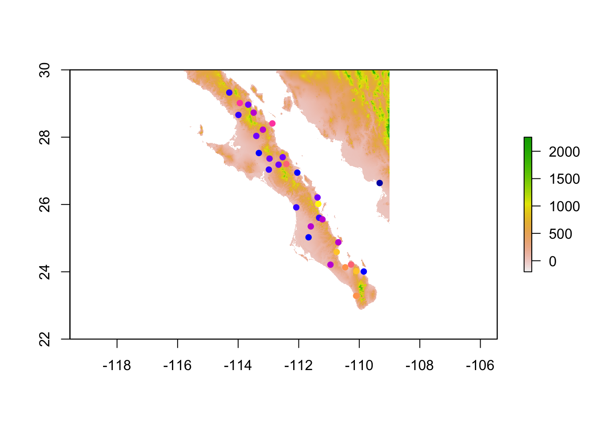
⚠️ |
You need to be careful here. When you use built-in graphics processes in a markdown document such as this and intend to add subsequent plots to an existing plot you cannot run the lines individual. They must be all executed as the whole chunk. So there is no CTRL/CMD + RETURN action here, it will plot the first one and then complain throughout the remaining ones saying something like plot.new has not been called yet. So you have to either knit the whole document or just run the whole chunk to get them to overlay.
|
There is another way to grab just a portion of the raster—similar to cropping—which is to mask. A mask will not change the size of the raster but just put NA values in the cells that are not in the are of interest. So if we were to just mask above, it would never actually reduce the size of the raster, just add a lot more NA values. However, the setup is the same.
beetles %>%
filter( Site != 32 ) %>%
st_union() %>%
st_buffer( dist = 1 ) %>%
st_convex_hull() -> hull
baja <- mask( alt, as(hull, "Spatial"))
bajaclass : RasterLayer
dimensions : 960, 840, 806400 (nrow, ncol, ncell)
resolution : 0.008333333, 0.008333333 (x, y)
extent : -116, -109, 22, 30 (xmin, xmax, ymin, ymax)
crs : +proj=longlat +datum=WGS84 +no_defs
source : memory
names : alt_22
values : -202, 1838 (min, max)And it looks like.
plot(baja)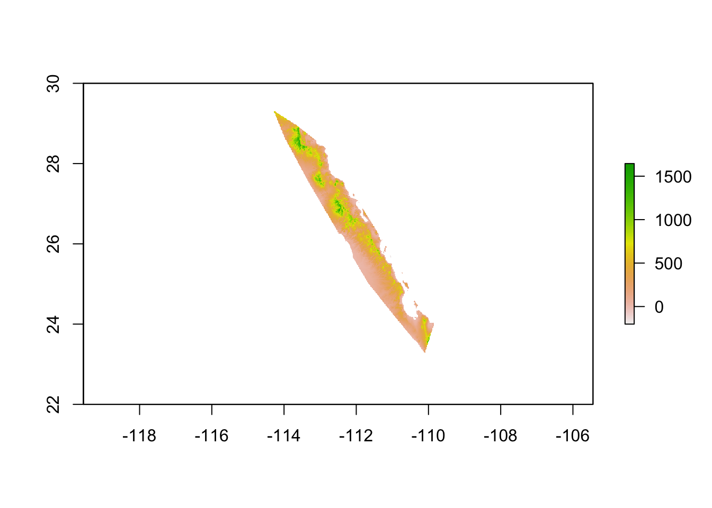
As you may suspect, our old friend ggplot has some tricks up its sleave for us. The main thing here is that ggplot requires a data.frame object and a raster is not a data.frame — Unless we turn it into one (hehehe) using a cool function called rasterToPoints(). This takes the cells of the raster (and underlying matrix) and makes points from it.
alt %>%
rasterToPoints() %>%
head() x y alt_22
[1,] -115.7958 29.99583 55
[2,] -115.7875 29.99583 126
[3,] -115.7792 29.99583 94
[4,] -115.7708 29.99583 99
[5,] -115.7625 29.99583 106
[6,] -115.7542 29.99583 120However, they are not a data.frame but a matrix.
alt %>%
rasterToPoints() %>%
class()[1] "matrix" "array" So, if we are going to use this, w need to transform it from a matrix object into a data.frame object. We can do this using the as.data.frame() function. Remember from the lecture on data.frame objects that we can coerce columns of data (either matrix or array) into a data.frame this way.
So here it is in one pipe, using the following tricks:
- Converting raster to points and then to data.frame so it will go into ggplot
- Renaming the columns of data I am going to keep so I don’t have to make xlab and ylab
alt %>%
rasterToPoints() %>%
as.data.frame() %>%
transmute(Longitude=x,
Latitude=y,
Elevation=alt_22) -> alt.df
head( alt.df ) Longitude Latitude Elevation
1 -115.7958 29.99583 55
2 -115.7875 29.99583 126
3 -115.7792 29.99583 94
4 -115.7708 29.99583 99
5 -115.7625 29.99583 106
6 -115.7542 29.99583 120Then we can plot it by:
- Plotting it using geom_raster() and setting the fill color to the value of elevation. - Making the coordinates equal (e.g., roughtly equal in area for longitude and latitude), and - Applying only a minimal theme.
alt.df %>%
ggplot() +
geom_raster( aes( x = Longitude,
y = Latitude,
fill = Elevation) ) +
coord_equal() +
theme_minimal() -> baja_elevation
baja_elevation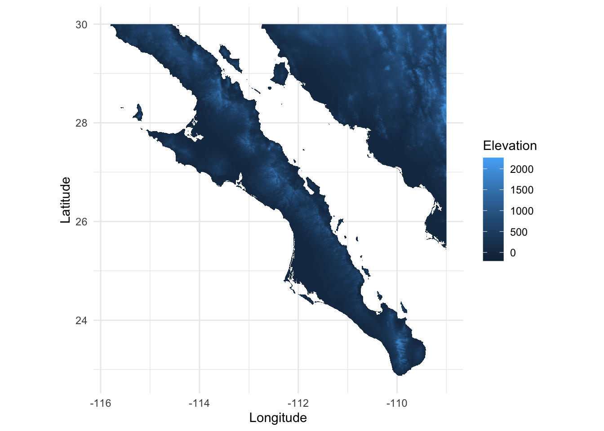
That looks good but we should probably do something with the colors. There is a built-in terrain.colors() and tell ggplot to use this for the fill gradient.
baja_elevation +
scale_fill_gradientn( colors=terrain.colors(100))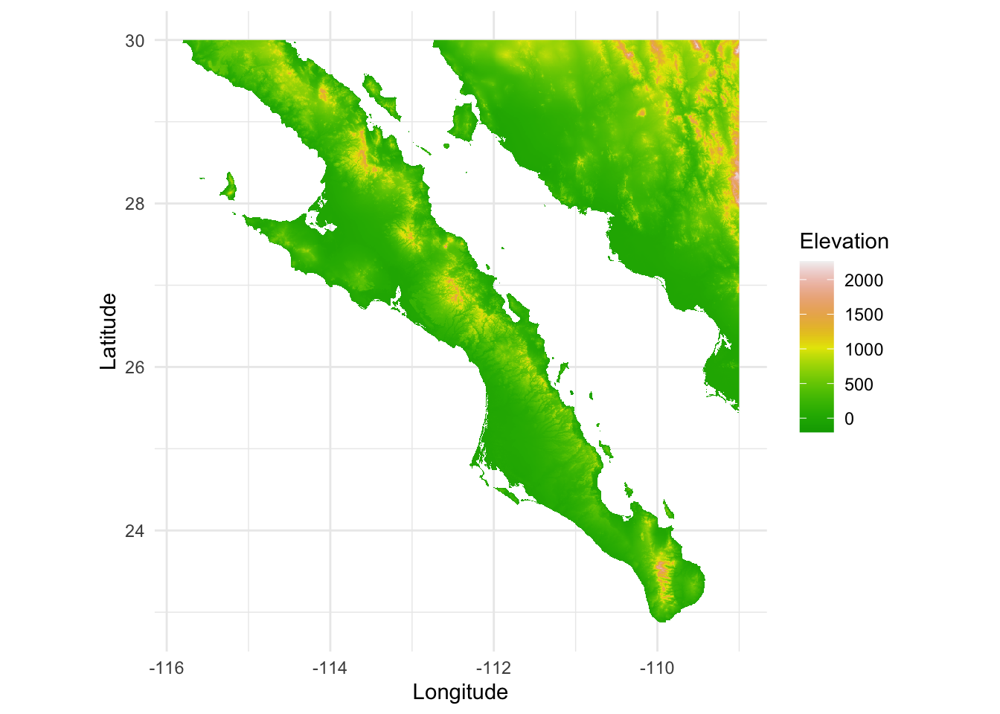
Or you can go dive into colors and set your own, you can set up your own gradient for ggplot using independent colors and then tell it where the midpoint is along that gradient and it will do the right thing©.
baja_elevation +
scale_fill_gradient2( low = "darkolivegreen",
mid = "yellow",
high = "brown",
midpoint = 1000 ) -> baja_map
baja_map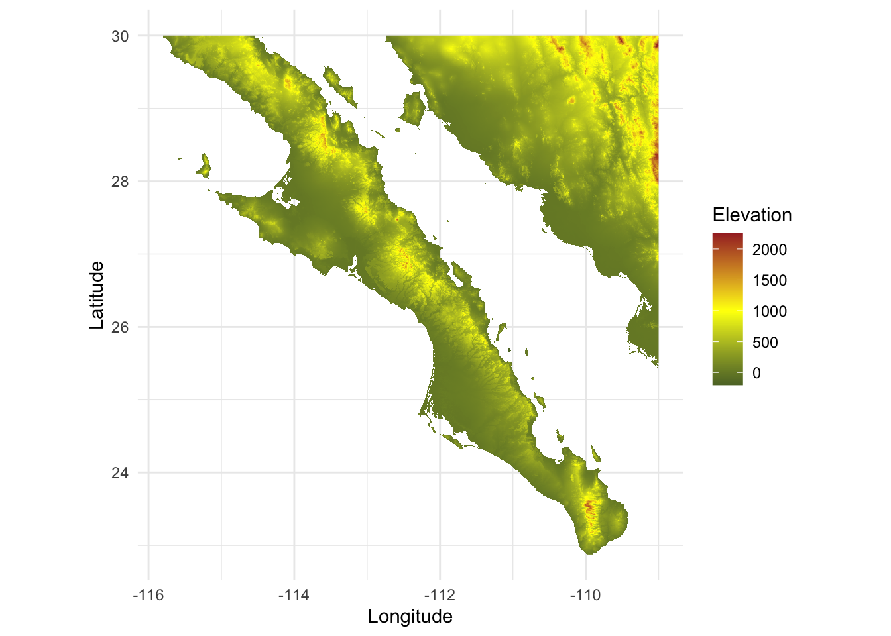
Now that looks great. Now, how about overlaying the points onto the plot and indicate the size of the point by the ♂♀ ratio.
baja_map +
geom_sf( aes(size = MFRatio ),
data = beetles,
color = "dodgerblue2",
alpha = 0.75) 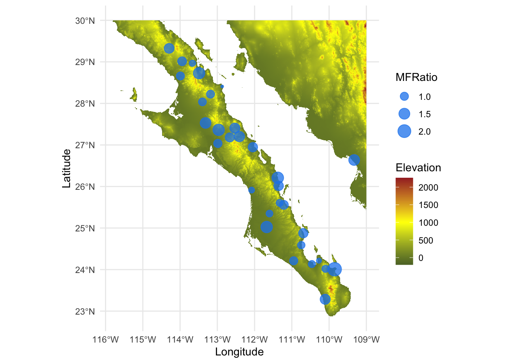
Now that looks nice.
You can get some information from a raster plot interactively by using the click function. This must be done with an active raster plot. After that, you use the click() function to grab what you need. Your mouse will turn from an arrow into a cross hair and you can position it where you like and get information such as the corrdinates (spatial) of the point and the value of the raster pixel at that location.
If you do not specify n= in the function then it will continue to collect data until you click outside the graphing area. If you set id=TRUE it will plot the number of the point onto the map so you can see where you had clicked. Since this is interactive, you will not see the process when you execute the code below, but it will look like.
plot( alt )
click(alt, xy=TRUE, value=TRUE, n=3 ) -> points
Here are what the points look like.
points x y value
1 -113.6292 28.45417 870
2 -112.4792 26.85417 1185
3 -111.2458 24.83750 135
4 -109.9958 23.48750 1145I’m going to rename the column names
points %>%
transmute( Longitude = x,
Latitude = y,
Value = value) -> sitesAnd then I can plot those points (using geom_point()) onto our background map.
baja_map +
geom_point( aes(x = Longitude,
y = Latitude,
size = Value), data=sites, color="red") 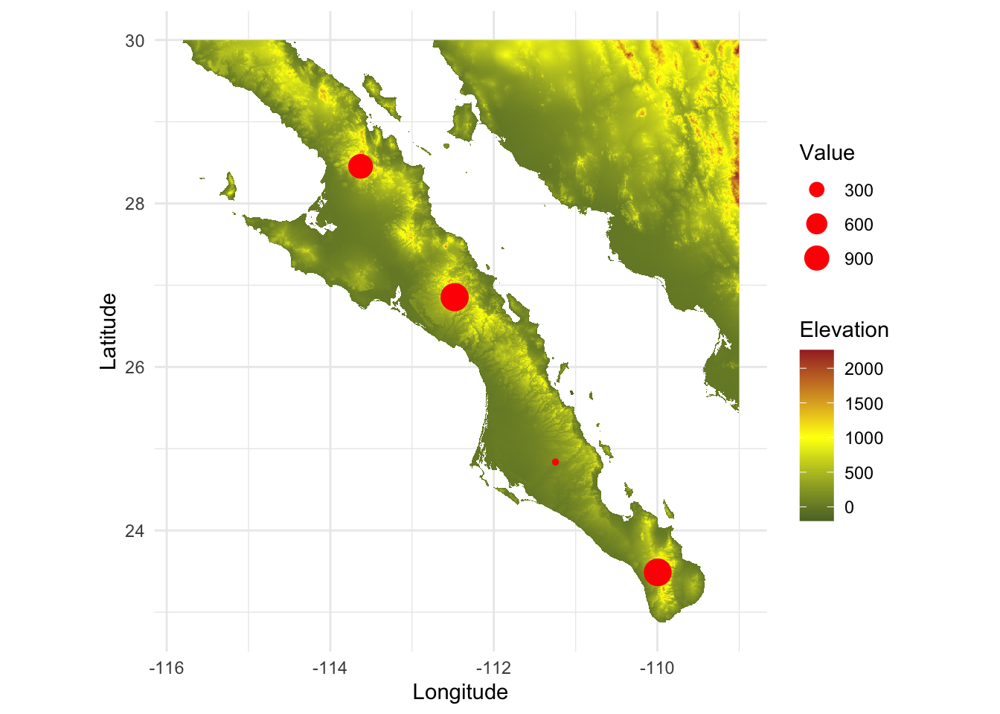
Mexellent!
Just like points, we can reproject the entire raster using the projectRaster function. HJere I am going to project the raster into UTM Zone 12N, a common projection for this part of Mexico from epsg.io.
Unfortunatly, the raster library does not use epsg codes so we’ll have to use the large description of that projection. See the page for this projection and scroll down to the proj.4 definition.
new.proj <- "+proj=utm +zone=12 +ellps=GRS80 +towgs84=0,0,0,0,0,0,0 +units=m +no_defs "Copy this into a character variable and then use the projectRaster() function and assign that new value as the CRS.
alt.utm <- projectRaster( alt, crs=new.proj)
plot( alt.utm, xlab="Easting", ylab="Northing" )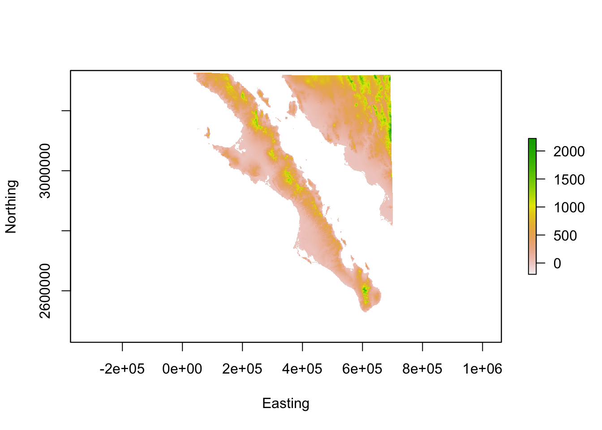
Easy.
OK, so now we can make and show a raster but what about doing some operations? A raster is just a matrix decorated with more geospatial information. This allows us to do normal R like data manipulations on the underlying data.
Consider the following question.
What are the parts of Baja California that are within 100m of the elevation of site named San Francisquito (
sfran)?
To answer this, we have the following general outline of operations.
sfranalt raster that is within 100m (+/-) of that site.To do this we will use both the alt and the beetles data objects.
First, we find out the coordinates of the site.
sfran <- beetles$geometry[ beetles$Site == "sfran"]
sfranGeometry set for 1 feature
Geometry type: POINT
Dimension: XY
Bounding box: xmin: -112.964 ymin: 27.3632 xmax: -112.964 ymax: 27.3632
Geodetic CRS: WGS 84POINT (-112.964 27.3632)Now, we need to figure out what the value of elevation in the alt raster is at this site. This can be done with the extract() function from the raster library.
However, the this function doesn’t work directly with sf objects so we need to cast it into a Spatial object1. Fortunatly, that is a pretty easy coercion.
raster::extract(alt, as(sfran,"Spatial") ) [1] 305Warning: in the above code, I used the function extract() to extract the data from the alt raster for the coordinate of the target locale. However, there is also an extract() function that has been brought in from the dplyr library (as part of tidyverse). In this file, I loaded library(raster) before library(tidyverse) and as such the dplyr::extract() function has overridden the one from raster—they cannot both be available. As a consequence, I use the full name of the function with package::function when I call it as raster::extract() to remove all ambiguity. If I had not, I got a message saying something like, Error in UseMethod("extract_") : no applicable method for 'extract_' applied to an object of class "c('RasterLayer', 'Raster', 'BasicRaster')". Now, I know there is an extract() function in raster so this is the dead giveaway that it has been overwritten by a subsequent library call.
To work on a raster directly, we can access the values within it using the values() function (I know, these statistican/programmers are quite cleaver).
So, to make a copy and make only the values that are +/- 100m of sfran we can.
alt_band <- alt
values( alt_band )[ values(alt_band) <= 205 ] <- NA
values( alt_band )[ values(alt_band) >= 405 ] <- NA
alt_bandclass : RasterLayer
dimensions : 960, 840, 806400 (nrow, ncol, ncell)
resolution : 0.008333333, 0.008333333 (x, y)
extent : -116, -109, 22, 30 (xmin, xmax, ymin, ymax)
crs : +proj=longlat +datum=WGS84 +no_defs
source : memory
names : alt_22
values : 206, 404 (min, max)Then we can plot overlay plots of each (notice how I hid the legend for the first alt raster).
plot( alt, col="gray", legend=FALSE, xlab="Longitude", ylab="Latitude")
plot( alt_band, add=TRUE )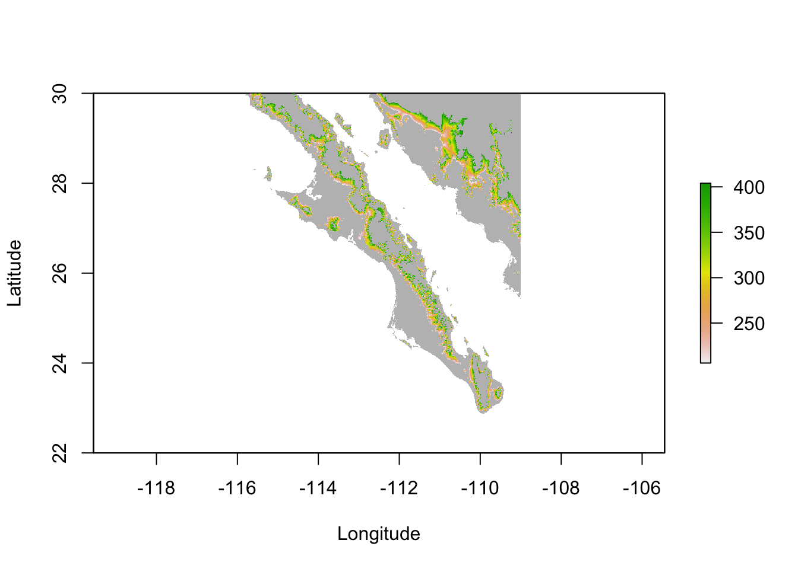
We can also proceed by relying upon the data.frame objects representing the elevation. So let’s go back to our the alt.df object and use that in combination with a filter and plot both data.frame objects (the outline of the landscape in gray and the elevation range as a gradient). I then overlay the beetle data with the ratios as sizes and label the locales with ggrepel. Notice here that you can use the sf::geometry object from beetles if you pass it through the st_coordinates function as a statistical tranform making it regular coordinates and not sf objects (yes this is kind of a trick and hack but KEEP IT HANDY!).
library( ggrepel )
alt.df %>%
filter( Elevation >= 205,
Elevation <= 405) %>%
ggplot() +
geom_raster( aes( x = Longitude,
y = Latitude),
fill = "gray80",
data=alt.df ) +
geom_raster( aes( x = Longitude,
y = Latitude,
fill = Elevation ) ) +
scale_fill_gradient2( low = "darkolivegreen",
mid = "yellow",
high = "brown",
midpoint = 305 ) +
geom_sf( aes(size=MFRatio),
alpha=0.5,
color="dodgerblue3",
data=beetles) +
geom_text_repel( aes( label = Site,
geometry = geometry),
data = beetles,
stat = "sf_coordinates",
size = 4,
color = "dodgerblue4") +
coord_sf() +
theme_minimal() Warning in st_point_on_surface.sfc(sf::st_zm(x)): st_point_on_surface may not
give correct results for longitude/latitude data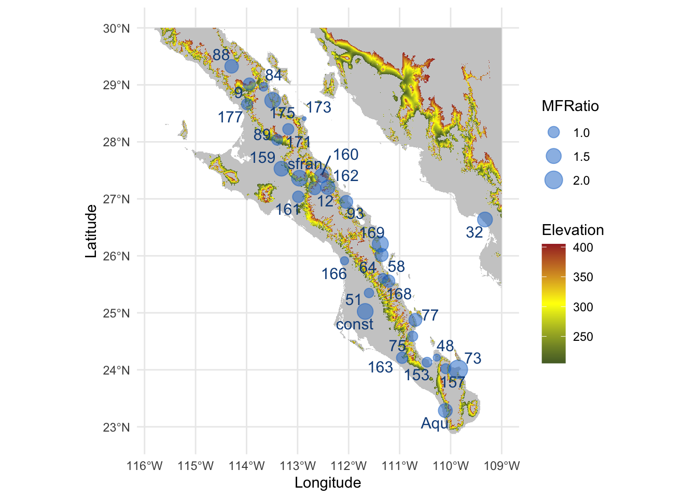
Very nice indeed.
plot(r)
click(r)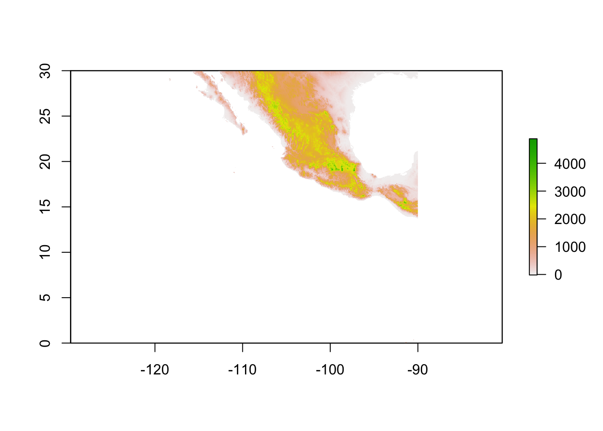
NULLA Spatial object is from the sp library. This is an older library that is still used by some. It is a robust library but it is put together in a slightly different way that complicates situations a bit, which is not why we are covering it in this topic.↩︎